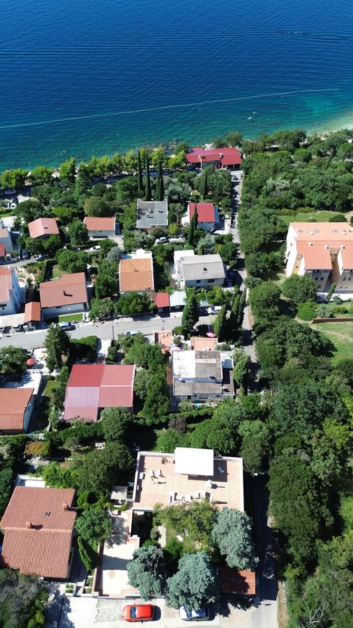
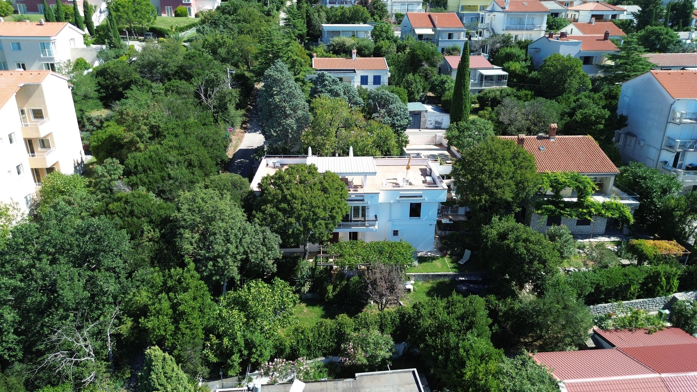
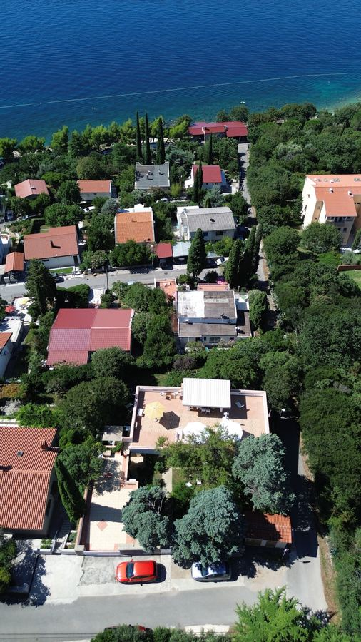

A little town with a long story
Novi sits 50 km south of Rijeka, on the hill above a small harbour, at the sea end of a long valley that once fed the whole area and was known for its vines. Today it's a relaxed, family-friendly town, and local wine is still poured in its shops and restaurants.
The vine valley
The town takes its name from the valley behind it, Vialis vinearia: “vino” for wine, “dol” for valley.
The Vinodol Code
Written here by the noble Frankopan family in old Glagolitic script, it is one of the oldest legal documents in Croatian history.
Habsburg holidays
Drawn by the clear sea and nearby mountains, 19th-century nobles began building holiday homes here, and tourism was born.
Villa Vaho is built
The tradition continued in the 60s and 70s, when the house was built on the slope above the sea, where it still stands.




Things to do nearby
- On the water
- Swimming, snorkelling, diving, sailing and boat tours to explore the coastline and the nearby islands.
- History on the doorstep
- The ruins of the Pauline monastery are 1.8 km away and the Frankopan tower 6.8 km. In town: the museum and a summer programme of concerts, festivals and exhibitions.
- Further afield
- The island of Krk and the Biserujka cave (37 km), national parks and lakes, Mount Učka, Istria, and even Venice, three hours away.
- At the table
- Grilled fish and meat, Mediterranean and Italian cooking, and hunters' lodges serving game in the hills.